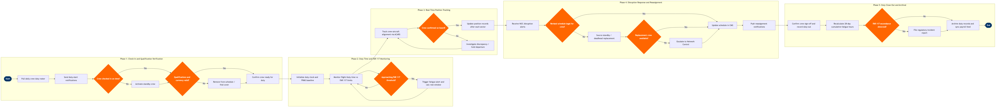

| Step | L4 Step Name | KPI / Target | Pain Point / Risk | Gate |
|---|---|---|---|---|
| 1.1 | Pull daily crew duty roster from CMS | Roster accuracy ≥99% match to published pairings; list generated ≥3 hrs before first departure | Late roster amendments from crew bidding workflow can cause data sync lag between Jeppesen and Altéa PSS, risking crew data mismatches at check-in during hub-complex rotations | |
| 1.2 | Send automated duty-start notifications to crew | Notification delivery rate ≥99.5% within 30 min of duty window opening; read-receipt confirmed for ≥90% of app-registered crew | Crew mobile app adoption varies across base seniority groups; SMS fallback provides no read-receipt confirmation, creating unverified notification risk for critical duty changes during irregular operations | |
| 1.3 | Verify crew check-in at required report time | On-time check-in rate ≥98%; no-show detection and standby activation trigger within 15 min of missed report time | Manual check-in verification at outstations with no dedicated crew desk compresses the standby activation window; regional airport staffing gaps mean no-shows may not be detected until gate agents escalate, often inside 60 min to departure | ⚠ |
| 1.4 | Validate crew qualifications, recency & type currency | Zero qualified-crew-on-illegal-assignment incidents; automated compliance check runtime ≤2 min per crew member | Training record sync delays between the airline LMS and Jeppesen can allow stale qualification data to persist, creating regulatory exposure under FAR Part 61 if a crew member's type rating lapse is not reflected in the CMS before duty commencement | ⚠ |
| 2.1 | Initialize duty period clock & FRMS baseline | Duty record initialization within 5 min of check-in confirmation; FRMS baseline computed for 100% of active crew | FRMS models calibrated on aggregate fleet data may underestimate fatigue for crew transitioning from high-density transcontinental rotations into back-to-back short-haul turns, particularly where rest was taken across multiple time zones | |
| 2.2 | Monitor real-time duty time against FAR Part 117 limits | Zero FAR Part 117 FDP exceedances; alert triggered ≥60 min before any limit breach; alert-to-action response time ≤10 min | ACARS timestamp delays at congested hub airports (e.g., ORD, ATL) can cause duty time calculations to lag actual operations by 5–12 min, compressing the crew controller's response window before a legally binding FDP limit is reached | ⚠ |
| 2.3 | Calculate projected rest requirement & next availability | Rest calculation accuracy ±0 min (regulatory requirement); hotel release notification issued within 30 min of projected rest start; ≥95% of rest-period hotel blocks confirmed before duty release | Hotel inventory management for irregular operations is handled outside the CMS via a separate vendor portal, requiring manual coordination that increases the risk of accommodation errors and delays crew rest commencement, eroding the legally mandated minimum rest period | |
| 3.1 | Track crew-to-aircraft assignment via ACARS OOOI data | Crew position update latency ≤5 min after OOOI event; position mistrack rate <0.5% of daily operated sectors | ACARS message dropouts in remote or oceanic airspace create position gaps; fallback to manual satellite phone verification adds 15–20 min lag, which is operationally critical for connecting crew or minimum-rest rotations at outstation overnight bases | ⚠ |
| 3.2 | Confirm crew on-board status against PSS manifest | Crew boarding confirmation ≥15 min before STD; zero departures with unresolved unconfirmed crew status | Altéa crew manifest data refresh depends on the Jeppesen–Altéa integration batch cycle; if the interface runs on a 10-min cadence, last-minute crew swaps may not be reflected in the PSS boarding system, triggering false missing-crew alerts and unnecessary departure holds | |
| 3.3 | Update crew position records after each completed sector | Position record updated within 10 min of IN event; data accuracy ≥99.8% match to ACARS source timestamps | Multi-leg rotations with short turn times under 45 min risk position record overwrites if the prior segment's IN event message arrives after the subsequent segment's OUT event has already been logged, creating a phantom dual-assignment state in the CMS | |
| 4.1 | Receive & triage crew-impacting disruption alerts from NOC | Initial crew impact assessment within 10 min of disruption notification; zero unacknowledged disruption alerts aged >15 min | NOC disruption data feeds into the CMS via a polling API; 5-min polling intervals can delay crew controller awareness of fast-moving ATC programs or ground stops at high-traffic hubs, shortening the window available to proactively cover downstream crew illegalities | |
| 4.2 | Assess revised schedule legality for impacted crew | Legality check completed within 15 min of disruption triage; waiver utilization rate <5% of disrupted operations; zero post-event FAR Part 117 violations | Jeppesen's automated solver engine may time out on complex network disruptions affecting 20 or more crew simultaneously, requiring manual controller override and extending resolution time beyond the OTP recovery window, particularly during hub-wide weather events | ⚠ |
| 4.3 | Source and assign replacement or standby crew | Standby crew activated within 30 min of need identification; deadhead crew positioned within 2 hrs; crew coverage rate ≥97% of disrupted flights | Standby pool sizing is optimized for statistically expected disruption levels; severe weather events causing hub ground stops exceeding 4 hrs exhaust local standby pools, forcing cross-base deadhead that itself consumes FAR Part 117 FDP, further compressing available duty time for replacement crews | ⚠ |
| 4.4 | Issue crew reassignment notifications & sync downstream systems | Crew notification sent within 5 min of reassignment confirmation; CMS-to-PSS sync completed before gate opens (≥30 min before STD); notification delivery confirmation rate ≥98% | Cascading reassignments in multi-hub disruptions generate notification storms; crew mobile app rate limits and carrier network congestion at hub airports cause delivery delays precisely during peak disruption windows when accurate crew information is most critical | |
| 5.1 | Confirm crew sign-off & record actual duty-out time | Duty record closed within 1 hr of crew release; sign-off discrepancy rate <1% of operated duties; open duty record resolution within 4 hrs | Overnight outstations with no crew desk rely entirely on self-reported sign-off via mobile app; connectivity issues at regional airports cause delayed uploads, creating open duty records that block the next crew scheduling build cycle and may delay payroll processing | |
| 5.2 | Recalculate 28-day cumulative flight & duty hours | Fatigue record updated within 2 hrs of duty close; zero crew members scheduled before 28-day rolling total validated; cumulative total accuracy ±0 min | FAR Part 117 rolling window calculations across international timezone boundaries introduce date-ambiguity edge cases in legacy CMS implementations, historically requiring manual audit for transmeridian crew rotations and generating compliance review backlog during peak international operation periods | ⚠ |
| 5.3 | Archive duty records & sync actuals to scheduling and payroll | Payroll data handoff to SAP within 24 hrs of duty close; scheduling feedback loop complete before next crew build cycle (T+48 hrs); archive integrity check ≥99.99% | Discrepancies between Jeppesen actual block hours and SAP payroll-recognized hours require manual reconciliation by crew admin; during irregular operations months, reconciliation volume can exceed crew administration capacity, delaying accurate payroll for 2–5% of crew members and generating grievance risk under collective bargaining agreements |